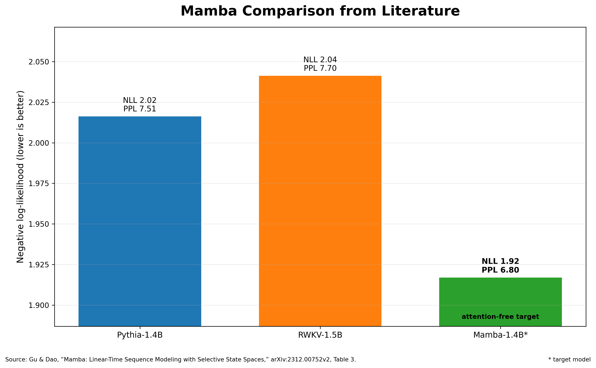
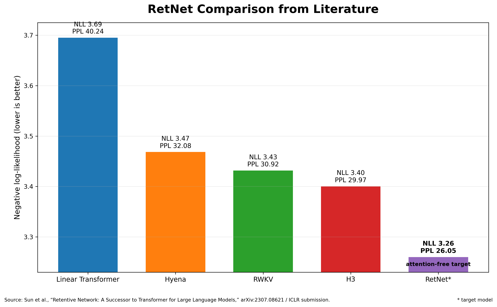
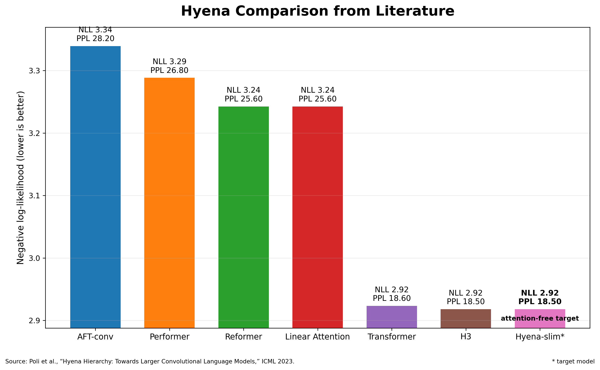
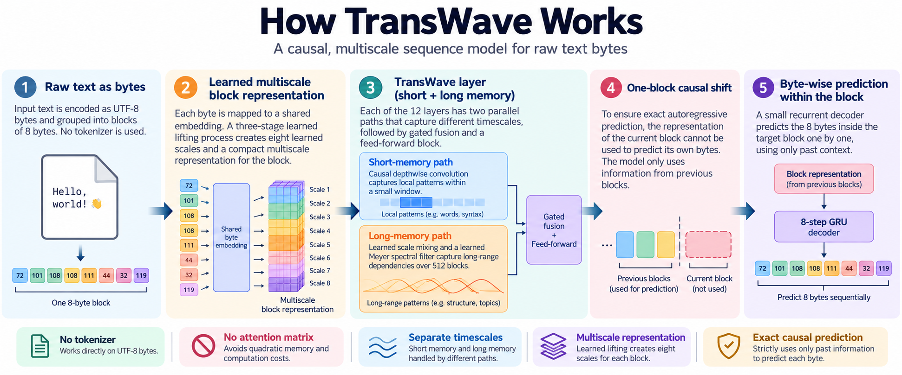
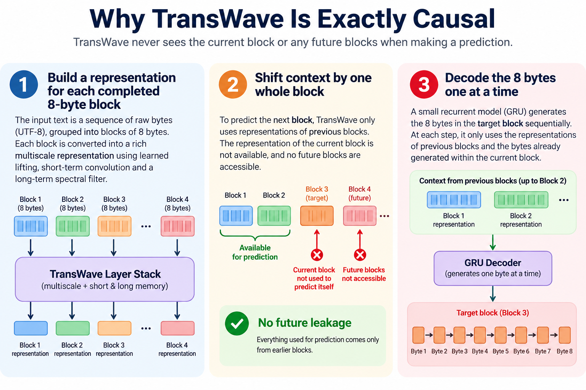
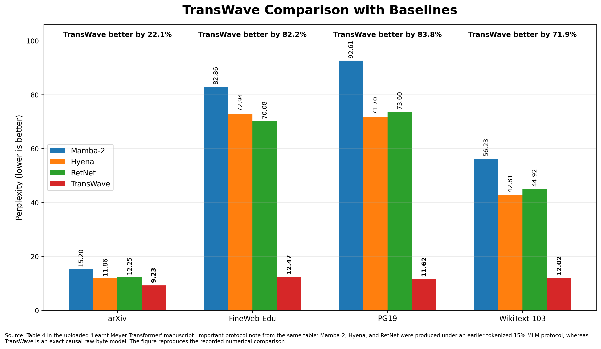

Attention-free language modeling
TransWave
A raw-byte causal language model that gives short memory, long memory and exact next-byte prediction different jobs instead of forcing one global attention mechanism to do everything.
Transformers made dense attention the default language-modeling operator. That default works extremely well, but it is expensive: every position repeatedly gets machinery for interacting with many earlier positions. TransWave starts from a different premise. Local patterns, long-range structure and exact autoregressive decoding are not the same problem, so they should not be handled by the same mechanism.
TransWave works directly on UTF-8 bytes. It does not depend on an external tokenizer. Eight bytes are grouped into a block, transformed into a learned multiscale representation, and then passed through layers that contain a short-memory path and a long-memory spectral path. A final causal shift and a small recurrent decoder ensure that each byte is predicted only from information that genuinely came before it.
First, the baselines: these are not straw men
Mamba, RetNet and Hyena are three of the strongest lines of work showing that dense attention is not the only way to build a serious language model. The three figures below come from the original literature for those model families. They are deliberately shown as three separate comparisons because they use different datasets and experimental protocols.
How to read the next three figures
Compare bars inside each figure. Do not compare the absolute heights of a Mamba bar with a RetNet or Hyena bar. These are separate experiments from separate papers. Their purpose here is to establish that all three baseline families were already credible language-modeling alternatives to dense attention.
Mamba
The Mamba figure uses the original Mamba paper by Albert Gu and Tri Dao. The values are from the Pile validation comparison at roughly the 1.4-billion-parameter scale. In that comparison, Pythia and RWKV use the same GPT-NeoX tokenizer and training data family, making the within-figure comparison meaningful. Mamba records the lowest perplexity of the three.

RetNet
The RetNet figure comes from the original RetNet paper by Yutao Sun and colleagues. It uses their controlled 200-million-parameter architecture comparison on in-domain validation. RetNet is compared with H3, RWKV, Hyena and a Linear Transformer, and it records the lowest perplexity in that experiment.

Hyena
The Hyena figure comes from the ICML 2023 Hyena paper by Michael Poli and colleagues. It uses WikiText-103 with models around 125 million parameters and the same tokenizer. Hyena-slim reaches the same perplexity as H3 and slightly edges the Transformer value reported in that table, while substantially outperforming several earlier efficient-attention alternatives.

What do NLL and perplexity actually mean?
Language-model papers often throw these two numbers at readers without explaining the intuition. Both are measures of how uncertain the model was about what actually came next, and for both of them lower is better.
NLL: a surprise score
At every prediction step, a language model spreads probability across the possible next symbols. If the symbol that really occurs was assigned high probability, the model was not very surprised. If it assigned very little probability to the correct symbol, it was badly surprised.
Negative log-likelihood, or NLL, accumulates that surprise. A lower NLL means the model consistently put more probability on what actually happened.
Perplexity: uncertainty on a friendlier scale
Perplexity expresses essentially the same uncertainty in a scale that is easier to read. As a rough intuition, a perplexity near 10 means the model behaves as though it is choosing among about ten equally plausible possibilities at a typical step.
That is only an intuition, not a literal count of candidates. The important point is simple: lower perplexity means a more confident, more accurate predictive model.
The unit being predicted matters.
A byte-level causal perplexity, a token-level causal perplexity and a masked-token perplexity are not interchangeable numbers. Tokenization changes what one prediction step means; masked reconstruction changes the prediction task itself. That distinction becomes important when we discuss the historical TransWave comparison later on this page.
What TransWave does differently
TransWave does not replace attention with one new all-purpose operator. It decomposes the job by timescale.

1. Raw bytes instead of an external tokenizer
The input is UTF-8 bytes. Every eight bytes form one block. A shared byte embedding and a three-stage learned lifting transform turn that block into eight learned scales. The result is a 768-dimensional multiscale block state.
2. Short memory gets a short operator
Every TransWave layer contains a strictly causal depthwise convolution with a seven-block window. Its job is local structure: the kind of dependency that does not need a huge memory mechanism.
3. Long memory gets a learned spectral operator
The second path uses a learned Meyer-structured spectral filter spanning 512 blocks. The smooth multiscale basis is structured, while its spectral response is trained end to end. Learned scale mixing and content-dependent gates sit around the long-memory operator.
4. The two paths are fused, not forced to compete
The local and long-range paths are combined through learned gates and a residual update, followed by a feed-forward block. This is repeated for 12 layers. The architecture therefore has one route for cheap local transitions and another for structured long-range dependence.
5. Exact causality is enforced separately
A block model is only useful as a causal language model if it cannot use the block it is trying to predict. TransWave shifts the global context by one complete block. The recurrent decoder for the target block therefore starts only from completed earlier blocks and then predicts the eight bytes inside the target block one at a time.

The result that does not need a baseline caveat
The cleanest result is TransWave's own held-out causal evaluation. The same 96.13M-parameter architecture was trained separately on four very different corpora: arXiv scientific text, FineWeb-Edu web text, PG19 books and WikiText-103 encyclopedic text. Every run predicts raw bytes causally, and every run used a 32,768-byte context.
| Dataset | NLL | Perplexity | What is predicted |
|---|---|---|---|
| arXiv | 2.22 | 9.23 | Next raw byte |
| FineWeb-Edu | 2.52 | 12.47 | Next raw byte |
| PG19 | 2.45 | 11.62 | Next raw byte |
| WikiText-103 | 2.49 | 12.02 | Next raw byte |
| Mean | 2.42 | 11.33 | Next raw byte |
The striking part is not one lucky dataset. The four held-out perplexities stay in a narrow band despite the corpora being quite different. The stored validation traces also continue improving at the end of the deliberately short three-pass runs.
The historical comparison — useful, but read it correctly
The repository also contains recorded baseline rows for Mamba-2, Hyena and RetNet. These are the three rows used in the comparison figure below. They did not come from the literature plots shown earlier on this page. They were produced in the TransWave project's earlier benchmark pipeline under a tokenized 15% masked-language-model protocol.
| Baseline | Architecture source | Numbers in the TransWave comparison |
|---|---|---|
| Mamba-2 | Dao & Gu, ICML 2024 | Recorded by the repository's legacy tokenized 15% masked-language-model benchmark; 126.29M parameters. |
| Hyena | Poli et al., ICML 2023 | Recorded by the same legacy benchmark; 111.42M parameters. |
| RetNet | Sun et al., 2023 | Recorded by the same legacy benchmark; 117.71M parameters. |
| TransWave | This repository | Exact causal raw-byte next-byte evaluation; 96.13M parameters. |

Why keep this comparison at all?
Because it records the experiments that led to TransWave and shows that the architecture did not merely land near the historical baseline numbers. The separation is large. But the scientifically clean claim is the exact-causal TransWave result above. A matched causal, byte-normalized comparison against Mamba-2, Hyena and RetNet would be the stronger next experiment.
Within that historical table, TransWave's recorded perplexity is lower than the best of the three baseline rows by 22.1% on arXiv, 82.2% on FineWeb-Edu, 83.8% on PG19 and 71.9% on WikiText-103. Those percentages describe the stored numbers; they should not be interpreted as a protocol-controlled estimate of superiority.
Why this architecture is interesting
TransWave's central claim is architectural rather than cosmetic. It does not assume that the best way to model every temporal scale is to repeatedly build dense pairwise interactions. It gives local dependence a cheap local route, long dependence a structured learned spectral route, and exact autoregression a tiny sequential decoder only where sequence-by-sequence recurrence is actually needed.
That design produces a 96.13M-parameter model with no self-attention and no external tokenizer, yet it reaches held-out raw-byte perplexity around 9 to 12 on four corpora after only three passes through each training slice. More importantly, the architecture is still improving at the point where those short experiments stop.
Reproducibility
The public repository contains the architecture source, the four final causal result records, the historical comparison table, figure-generation code, architecture notes and the release-scale training recipe.
Useful entry points: architecture source, final causal results, comparison records, and release-scale training code.
Sources
- Albert Gu and Tri Dao. Mamba: Linear-Time Sequence Modeling with Selective State Spaces, 2023/2024.
- Tri Dao and Albert Gu. Transformers are SSMs: Generalized Models and Efficient Algorithms Through Structured State Space Duality, ICML 2024. This is the Mamba-2 architecture reference.
- Yutao Sun et al. Retentive Network: A Successor to Transformer for Large Language Models, 2023.
- Michael Poli et al. Hyena Hierarchy: Towards Larger Convolutional Language Models, ICML 2023.
- TransWaveV1 public repository: implementation, final causal records and historical baseline records.